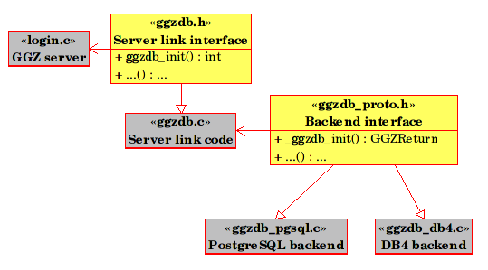
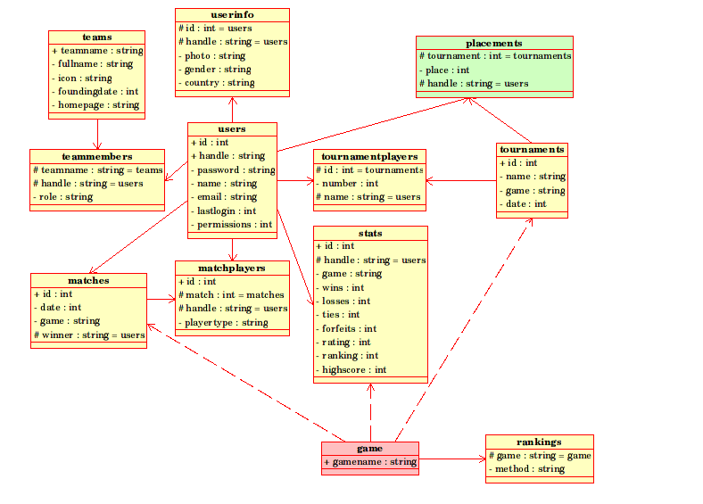

This is a supplemental documentation. More information can be found in the GGZ Hosting Guide.
The GGZ server makes extensive use of its database. There can either be a basic installation, or a full installation. The full installation is currently only supported by the PostgreSQL and MySQL backends, while the libdb variants are limited to the basic installation. Running a GGZ server ('ggzd') does not require the full installation, but operating the web interface (ggz-community) does.
The database backend has to be selected at compile time, for only one can be present at a time. The following graphics illustrates the programmer's view on the GGZ database.

The server is designed to create all structures automatically on its first startup, using the connection data specified in ggzd.conf. This only includes the basic setup however, so it can operate at minimum level, so it's recommended to use the provided SQL schema files for the table creation before starting ggzd.
The following image describes visually the database structure. The basic installation covers the tables users and stats. The tables matchplayers, tournamentplayers and teammembers are relations between entries of the table users on the one hand, and matches, tournaments and teams on the other.

The placements table contains aggregate data, and is maintained by using the external script 'calcrankings'. The game table does not exist in the database, it will however be introduced in later versions and be maintained by the script 'ggzdconfig', together with a table named room.
To edit entries in the database manually, the tool 'ggzduedit' can be used.
Table users: contains all registered users.
| id | unique identifier (serial) |
|---|---|
| handle | player login name |
| password | player password |
| name | full name |
| email address | |
| lastlogin | timestamp of last login |
| permissions | permission bit mask |
Table stats: contains one entry for each player-gametype combination.
| id | unique identifier (serial) |
|---|---|
| handle | player login name |
| game | gametype name |
| wins | number of wins |
| losses | number of losses |
| ties | number of ties |
| forfeits | number of forfeits (cancelled games) |
| rating | calculated rating (e.g. Elo number) |
| ranking | position in ranking for this gametype |
| highscore | highest score ever reached |
Table userinfo: (and others) TODO